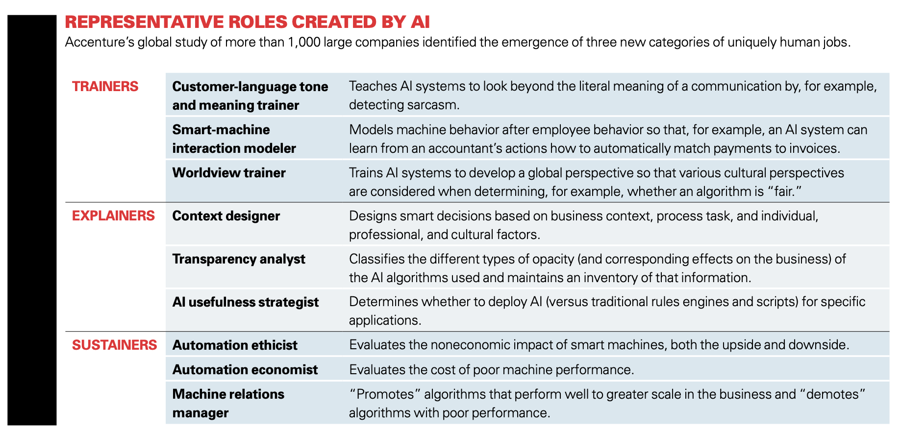

AI and Fine Artists
Can you tell whether the picture on the left was created by Monet or by AI?
That's the main reason why the conflict between fine artists and AI was fierce,
and why ethical problems like job loss are taken into consideration.
Unless with professional art ground, it's hard for people to tell the difference
between AI generated art and those created by human. The former takes 10 seconds,
while the latter takes weeks or even months. How ironic!
Fine art emphasize convention and skills, which doesn't cord with the changes AI is bringing. However, that doesn't mean fine art and fine artists are doomed.
AI creates various new jobs:
 Table from Wilson H. James, Daugherty Paul R., Morini-Bianzino Nicola, "The Jobs That Artificial Intelligence Will Create", MIT Sloan Management Review
Thus, it's also highly possible for AI to create new jobs. For example, a fine artist can become a “Machine art style trainer” with their professional knowledge in painting. The trainer can identify the art style of works generated by AI and fine-tune it if anything disharmonious occurs
For those who are not approaching new jobs, the high productivity AI brings about can also assist drafting and designing.
Fine art may not directly benefit from AI, but it can prosper in a different way.